High Resolution Layer Grasslands - Product User Manual (PUM)
Copernicus Land Monitoring Service
High Resolution Layers Grasslands, Herbaceous Cover, Grassland Mowing Events, Ploughing Indicator, Grassland Change detection, Sentinel-2 time-series analysis, Base Vegetation Layer, EAGLE Land Cover Components, LAEA tile grid, Product accuracy assessment
European Environment Agency (EEA)
Kongens Nytorv 6
1050 Copenhagen K
Denmark
https://land.copernicus.eu/
1 Executive summary
Copernicus is the European Union’s Earth Observation Programme. It offers information services based on satellite Earth observation and in situ (non-space) data. These information services are freely and openly accessible to its users through six thematic Copernicus services (Atmosphere Monitoring, Marine Environment Monitoring, Land Monitoring, Climate Change, Emergency Management and Security).
The Copernicus Land Monitoring Service (CLMS) provides geographical information on land cover and its changes, land use, vegetation state, water cycle and earth surface energy variables to a broad range of users in Europe and across the world in the field of environmental terrestrial applications.
CLMS is jointly implemented by the European Environment Agency (EEA) and the European Commission’s DG Joint Research Centre (JRC).
The High-Resolution Layer (HRL) vegetated land cover characteristics are a set of harmonised yearly maps dedicated to the thematic themes Tree Cover & Forests, Grasslands and Croplands. Those include a rich suite of raster products mapping the yearly status of those land cover types at a spatial resolution of 10 meters and change layers at 3-yearly interval and 20-meter resolution. HRL vegetated land cover characteristics extends the time-series of the existing HRL’s Tree Cover & Forests and Grasslands and complements the CLMS portfolio with new layer dedicated to the mapping of crop types and agricultural practices such as mowing, harvest and cover crops.
2 Background of the document
2.1 Scope
This Product User Manual is the primary document that users are recommended to read before using the product. It provides a description of the product characteristics, production methodologies and workflows, and information about the product quality of the annual provision of HRL Grasslands. Furthermore, it gives information on the terms of use and product technical support. More detailed information on the methodologies and processing workflows that were used to produce the products can be found in the Algorithm Theoretical Baseline Document (ATBD) [7].
2.2 Content and structure
In more detail, the document is structured as follows:
Chapter 3 provides an overview of the lineage of the products in relation to previous productions;
Chapter 4 contains a review of user requirements;
Chapter 5 provides on overview of what is included in the High Resolution Layers vegetated land cover characteristics and how the comprised products relate to each other;
Chapter 6 presents potential application areas and example use cases;
Chapter 7 provides a description of the products including the nomenclature and class definitions, file naming, spatial resolution format(s), etc.;
Chapter 8 summarizes the quality assessment, validation procedure and the results;
Chapter 9 provides information about product access and use conditions as well as the technical product support.
3 Lineage of HRL Tree Cover and Forests, Grasslands, and Croplands
High Resolution Layers (HRL)s on Tree Cover & Forests had already been established in the Copernicus Land Monitoring Service (CLMS) portfolio since the reference years 2012 producing initially a Dominant Leaf Type, a Tree Cover Density, and a Forest Type map at a spatial resolution of 20 meters (Figure 3-1). Change layers and reference datasets were included with the reference year 2015. At the same time the accuracy targets were raised towards at least 90% user’s and producer’s accuracy. A further important step followed with the first production for the reference years 2018 (further referred to as Historic HRL Forest 2018) where the spatial resolution of the status layers was raised to 10 meters, the implementation of the change layers was partially reconsidered and target accuracies for the change layers were defined. In addition, new aggregated layer depicting the density of coniferous and broadleaved tree cover was introduced. With the HRL Tree Cover & Forests starting from the reference year 2018 the product specifications have been kept largely in line with the definitions used for the Historic HRL Forest 2018 whereas major changes concerned in particular the move to a yearly update cycle for the status layers and changes to some confidence layers (not shown in Figure 3-1). The new HRL Tree Cover & Forests therefore replace and extend the Historic HRL Forest 2018. This does not include an update of the change layer 2015 – 2018; the new status layers for 2018 are therefore not consistent with the original change layers 2015 – 2018.
HRL’s on Grasslands had already been established in the Copernicus Land Monitoring Service (CLMS) portfolio since the reference years 2015 producing initially a status layer on the absence / presence of grassland (Figure 3-1) with a target Overall Accuracy of 85%. With the reference year 2018 the spatial resolution of the status layers was raised to 10 meters and a change layer with a target Overall Accuracy of 80% was introduced. With the HRL Grasslands starting from the reference year 2018 the product specifications have been kept largely in line with the definitions used for the Historic HRL Grassland 2018 whereas major changes concerned in particular the move to a yearly update cycle for the status layers, an additional yearly Herbaceous Cover layer (including also temporary grassland in the reference year), new layers on the count and timing of Grassland Mowing (Minimum Mapping Unit of 0.25 ha) and changes to some confidence layers (not shown in detail in Figure 3-1). The new HRL Grasslands therefore replaces and extends the Historic HRL Grassland 2018. This does not include an update of the change layer 2015 – 2018; the new status layers for 2018 are therefore not consistent with the original change layers 2015 – 2018.
The HRL Croplands is a new set of layers dedicated to agriculture and comprises several yearly layers mapping crop types (10-metre spatial resolution) and agricultural practices such as harvest, fallow land and secondary crops (10-metre spatial resolution, Minimum Mapping Unit of 0.25 ha).
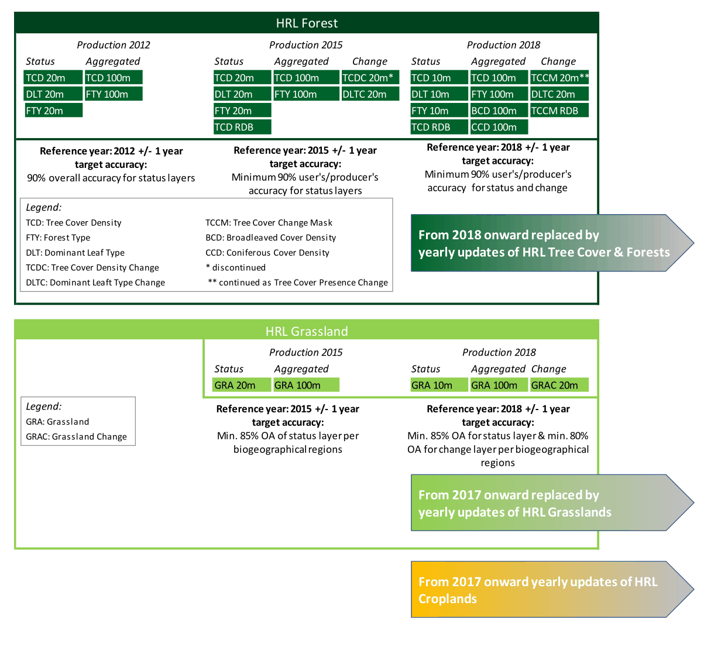
4 Review of User Requirements
In the frame of the Horizon 2020 (H2020) project ECoLaSS a survey [5] of key stakeholders has been performed in order to evaluate the user requirements towards the evolution of existing and future Copernicus products. This survey also made use of the results from the Nextspace User Study [6] and revealed that HRL users like European institutions, service industry, research and academia, national agencies, regional administrations, NGS or private users would in general appreciate:
High thematic quality/meaningful and application-oriented product definitions;
Sufficient spatial and timely resolution concerning both, status layer and change layer;
Short update cycles;
Change monitoring;
Free and open access;
High technical quality;
Standardized and comparable nomenclature;
Transparent and scientific workflows and state-of-the-art methodology;
Detailed documentation of these workflow and the respective methodology;
Consistency of the Pan-European products enabling synergistic use of all products;
Streamlining the pan-European product with global ones;
Availability of historic data and compatibility of time series;
Open access to the original Copernicus Sentinel data;
Sophisticated product presentation and visualisation possibilities in an online viewer on the Copernicus platform;
IPCC conformity.
While many of these requirements had already been satisfied with previous HRL reference years some could only be implemented within the current update:
A long-standing thematic gap in the European CLMS portfolio concerning the monitoring of agriculture has been addressed though new products on crop types and agricultural activities. This also improves the separation between grassland and cropland and the IPCC conformity;
Yearly update cycle for status layer;
Grassland use intensity (or the dynamics of intensification/ extensification) is partially addressed through a new product on Grassland mowing.
Further requirements that remain to be considered for future updates are for example:
More fine-grained differentiation among species-rich (extensively used) and separation from species-poor (intensively used) and managed grassland;
Tree-species compositions and shifts between extensive and intensive management;
Increased timeliness of availability of the products: The mid-term goal is a product provision at latest 12 months after the end of the reference year.
5 Product structure - What are the High Resolution Layers?
The High Resolution Layers (HRL) vegetated land cover characteristics portfolio consists of Tree Cover & Forests, Grasslands and Croplands products (Figure 5-1), which together cover most of what is defined as the Biotic component of the EAGLE Land Cover Components1. More specifically, the mapping is focused on surfaces with a vegetation cover above 30%; an exception to this is tree cover where the objective is to map tree cover with a continuous range of 1-100% Tree Cover Density (TCD), i.e. also below 30%, as far as detectable from 10-metre resolution satellite imagery. This definition is also in line with the Sparsely Vegetated class in the CLC+ Backbone Raster2 and considers that detection / classification of vegetation below this threshold is typically more error prone. The definition also aims at largely avoiding overlaps with the non-vegetated land cover characteristics such as HRL Imperviousness, which is focused on areas with less than 10% vegetation cover during any time of the year, for a reference period of 3 year.
Some overlaps between the three product groups are allowed by definition, for example areas with tree crops (i.e. olive, fruit and nut trees) which are included in both the Tree Cover & Forests and the Croplands products. Furthermore, specific vegetations types are not included in the HRLVLCC portfolio; this concerns areas dominated by natural shrubs (i.e. shrubs that are not under agricultural use) and associations of lichens and mosses.
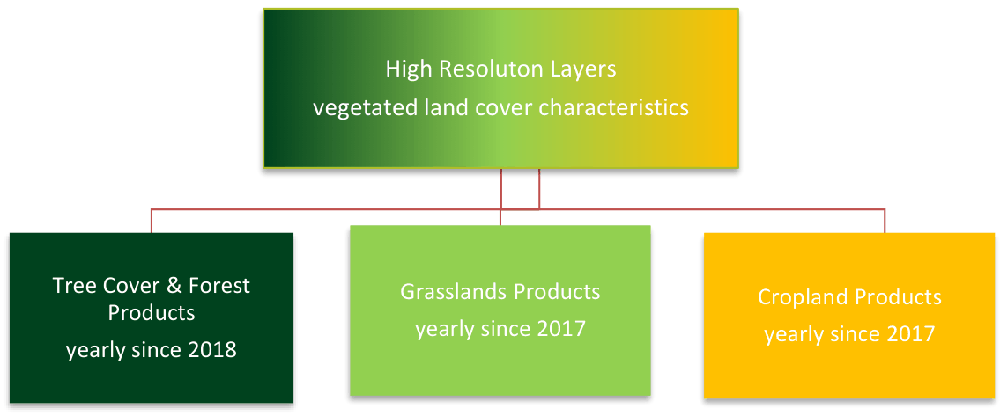
Given several interdependencies and potential overlaps among the Grasslands, Croplands and Tree Cover & Forests products, the overall workflow starts with the classification of Base Vegetation Layer (BVL). A high-level description is provided for the overall workflow in Figure 5-2. The yearly BVL classification initially targets the separation of 5 basic land cover classes being:
herbaceous vegetation;
cropland;
tree cover - coniferous
tree cover - broadleaved;
tree crops (i.e. nomenclature overlap between broadleaved tree cover and permanent crops in the Croplands product);
background class (including bare and sparsely vegetated areas and non-agricultural shrubs);
In a subsequent post-processing step two further classes are derived to delineate the:
potential overlap herbaceous – cropland (i.e. pixels which are classified as cropland and herbaceous at least once in the time-series);
The second derived class is derived from the intersection of all areas classified as tree cover and a preliminary version of the Tree Cover Density to delineate areas with low Tree Cover Density and hence allowed overlaps of herbaceous and tree cover.
The derived yearly BVL is considered for the downstream productions of Grasslands, Croplands and Tree Cover & Forests products as follows:
For the production of the Grasslands layers: all areas classified as herbaceous, overlap herbaceous – tree cover, or overlap herbaceous – Cropland are considered as the potential maximum extent for the Herbaceous Cover (HER) layer. In addition, the BVL classification probabilities for the herbaceous class are used as the main input for the derivation of the HER layer.
For the Croplands layers: the areas delineated as cropland, overlap herbaceous –cropland, or Tree Crops are considered as the maximum extent for the CTY classification and further refinement.
For the Tree Cover & Forests layers: the areas classified as tree cover, overlap herbaceous – tree cover, tree crops and the respective probabilities are used directly to derive the respective change layers and yearly DLT and TCD status layers.
Within the areas identified as overlap herbaceous – cropland, a further harmonization step is carried out downstream. To this end the CTY classification initially includes a class for fodder crops which are transferred to the HER layer if occurring in the designated overlap class.
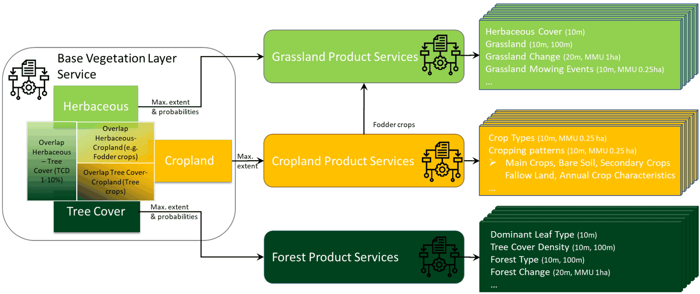
6 Product application areas and examples of use cases
The HRL Tree Cover & Forests, Grasslands and Croplands set of products is designed for use by a broad user community as basis for environmental and regional analysis and for supporting political decision-making, such as the Common Agricultural Policy (CAP), LULUCF (Land Use, Land Use Change and Forestry) ) regulation, the Nature Restoration Regulation (NRR), or the proposed European Forest Monitoring Law (FML). With the new products the EEA will ensure continuity and further densification of the well-established HRL Tree Cover & Forests and Grasslands product time series. Those include a rich suite of raster products at a 3-yearly interval mapping the status of those land cover types with a spatial resolution of 10-meter and change layers at 20-meter spatial resolution.
As an example, the following sections provide short information on (potential) use cases at national level, for which the Copernicus HRL Grasslands product represent a fundamental input.
6.1 Use case: Using Grassland Mowing data for CAP
The Grassland Mowing Events are derived using a Sentinel-2 time-series analysis by identifying vegetation disturbances in the Herbaceous Cover (HER) layer. Those disturbances usually show a sharp drop of biophysical signal compared to a previously defined reference. The main difficulty is to distinguish mowing events from cloud-influenced observations or to miss mowing events due to longer cloud-related data gaps.
The information on mowing events can support the correct implementation of the European Common Agricultural Policy (CAP).
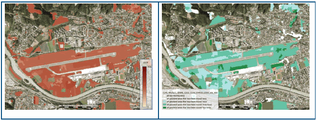
6.2 Use case: Land cover specific monitoring
Detailed and dynamic information on the state of the land as provided by the Grasslands layers allows to analyse regional trends in the area occupied by these land covers, which could be relevant information for authorities and policy makers. Furthermore, applications which require information on the land cover status can benefit from the Grasslands. For example, in case of biomass mapping often land cover specific parametrization is applied. Using the HRL Grasslands, allows to do this in a much more detailed and dynamic way. In case of the Evoland3 project, it is intended to use these layers to apply specific parametrization over crop and grassland locations.
7 Product description
The HRL Grasslands layers are generally provided in 100km LAEA tiles as shown in Figure 7-1. The five French Oversea Territories are provided in UTM with the layout of the respective territory. The layers are available as Cloud-Optimized GeoTIFFs (COG) per reference year and 100km LAEA tile aligned with the EEA reference grid. Each raster file is accompanied by a Persistent Auxiliary metadata (PAM) XML and an INSPIRE XML.
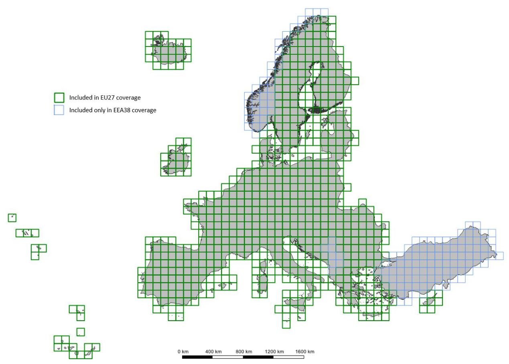
The primary layers of the HRL Grasslands portfolio (Figure 7-4) include the produced Grassland (GRA) status layer and the Herbaceous Cover (HER) status layer at a 10-meter resolution. Within the extent of the yearly HER layer, Grassland Mowing Events (GRAME) and Grassland Mowing Dates (GRAMD) are provided on a yearly basis and at a 10-meter resolution. Further layers are the Ploughing Indicator (PLOUGH), the Grassland Change layer (GRAC) as well as three accompanying confidence layers, the Grassland Confidence Layer (GRACL), the Grassland Change Confidence Layer (GRACCL), as well as the Grassland Mowing Events Confidence Layer (GRAMECL).
The Herbaceous Cover (HER) is a yearly binary layer at a 10 meter spatial resolution displaying information on the presence / absence of herbaceous vegetation cover starting from the reference year 2017. It adheres to the below definition of herbaceous cover and constitutes the basis for all other HRL Grasslands layers. A high-level overview of the dependencies among the HRL Grasslands layers is provided in Figure 7-2. The HER layer contains permanent and temporary grasslands (e.g. seeded grassland and fodder crops), in case it was the dominant land cover in the respective reference year.
The HER layer enables advanced users to derive temporary grasslands according to the different definitions, using the Ploughing Indicator (PLOUGH) and Grassland (GRA) layers (see description below). The HER layer, together with the PLOUGH layer, serves as the basis for deriving the GRA status layer by excluding all areas detected as ploughed within this period. However, an area can still be mapped as herbaceous even if a ploughing event occurred within a given year.
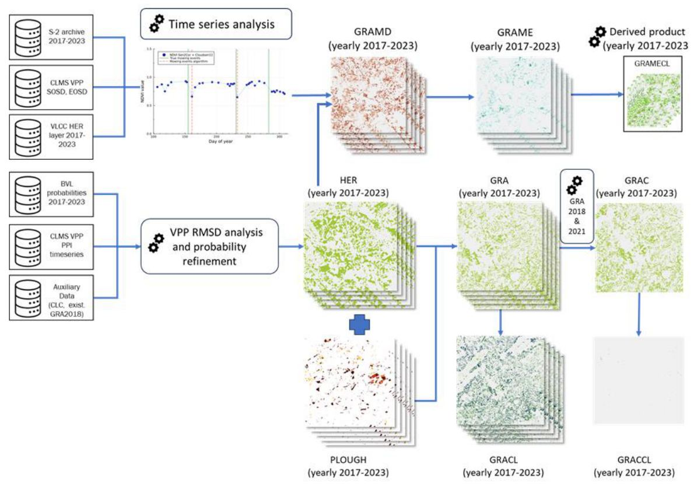
Before generating the GRA layer, the Ploughing Indicator (PLOUGH) is derived at 10 meter spatial resolution to define the permanent grassland area. For each pixel in the HER layer, the PLOUGH layer tracks the time since the most recent ploughing event or the last time it was not covered by herbaceous vegetation. It consists of codes 0 to 6, which represent the number of years that have passed since the last disruption of herbaceous cover (for reference year 2017: 1 = 2016 and 6 = 2011).
With the introduction of the HER layer, some changes are applied to the historical PLOUGH layers from the previous 2015 and 2018 productions to maintain consistency between the three layers: PLOUGH, GRA and HER. Class code (o) now indicates ploughing in current year, while the former class 0 (no ploughing information) has been reassigned to class code 253. Class 100 has been introduced to contain all pixels that changed between two years due to variations in the HER layer, where no ploughing was detected.
The first reference year for HRL Grasslands is 2017, meaning that ploughing information dating back to 2011 would have been required for consistency. However, the data quality for 2015 and earlier is considered rather poor due to the 20 meter spatial resolution and the mix of available imagery including very few Sentinel-2 scenes, Landsat 5, Landsat 8 and the HR_IMAGE_2012 [8].
Clipping the 10 meter Grassland layer with the 20 meter historic layers would introduce 20 meter edges, significantly affecting the final Grassland layer’s appearance. As a result, the PLOUGH for the years before 2016 was not used to mask out grassland areas.
However, ploughing information for the historic years 2011 to 2015 is still available in the PLOUGH for reference year 2017 and can be utilized for specific applications. As more reference years are added, historic data will gradually diminish, and starting with 2023 reference year, the PLOUGH layer will rely solely on Sentinel-2 data.
The Grassland (GRA) status layer at 10 meter spatial resolution is therefore a direct derivative of the corresponding HER and PLOUGH layer. All herbaceous areas that indicate ploughing events or herbaceous disruptions in the current and previous five years are masked out, resulting in the permanent grassland areas.
The HRL Grasslands portfolio also includes the Grassland Change (GRAC) layer at 20 meter resolution, indicating gain and loss of permanent grassland vegetation between 2018 and 2021 with a Minimum Mapping Unit of 1ha.
The Grassland Mowing (GRAM) layers map the number (up to four) detected mowing events and their respective start dates. The Grassland Mowing Events (GRAME) layer provides annual pixel-based information, starting from 2017, and contains the number of mowing events (0, 1, 2, 3, 4) within the detected permanent and temporary grassland extent of the Herbaceous Cover (HER).
The Grassland Mowing Dates (GRAMD) layers provides the day-of-year (DOY) for the start of each mowing event. Since up to four mowing events can be detected, GRAMD is provided in four individual raster datasets, each depicting the DOY for the first, second, third and fourth mowing event (GRAMD_1, GRAMD_2, GRAMD_3, GRAMD_4), respectively. This results in four GRAMD layers per reference year/per GRAME layer (Figure 7-3).
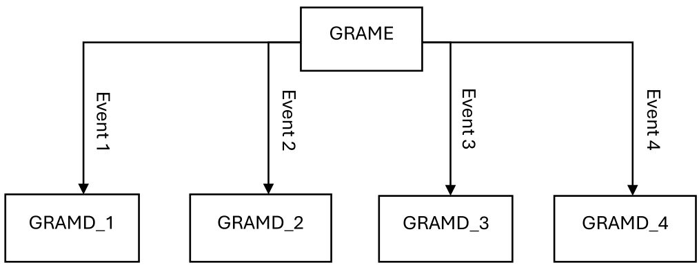
To reduce noise in the GRAMD layer, a GDAL sieve4 filter is applied independently to each of the four GRAMD layers. This filter ensures that patches of DOY-values smaller than the threshold of 0.25 ha (25 pixels) is replaced by the value of the largest neighbouring patch, but only if the size of the neighbouring patch is larger than the threshold. Since this filtering is applied individually to each GRAMD layer (GRAMD_1, GRAMD_2, …), in some cases, the newly assigned value is already present in one of the other mowing event date layers at the same location (i.e. the same pixels). In such cases, it results in date duplication, where timing of the first mowing event (GRAMD_1) and the second mowing event (GRAMD_2) share the same DOY. This occurs in approximately 0.4 % of the herbaceous pixels. For further information, please refer to the ATBD[7].
Additional layers complementing the HRL Grasslands portfolio are the Confidence Layers (CL) for which there are three: Grassland Confidence Layer (GRACL), Grassland Mowing Events Confidence Layer (GRAMECL) and Grassland Change Confidence Layer (GRACCL). These indicate on the reliability of the classifications by providing additional information on the degree of separability of each grassland/change/mowing pixel from other land cover types. They show the confidence of the classifier for each pixel in the grassland/change/mowing classification with values ranging from 0-100% confidence. This layer may be of interest e.g. for scientific valueadded applications, where the a-priori confidence of all input data is needed for overall error margin calculation.
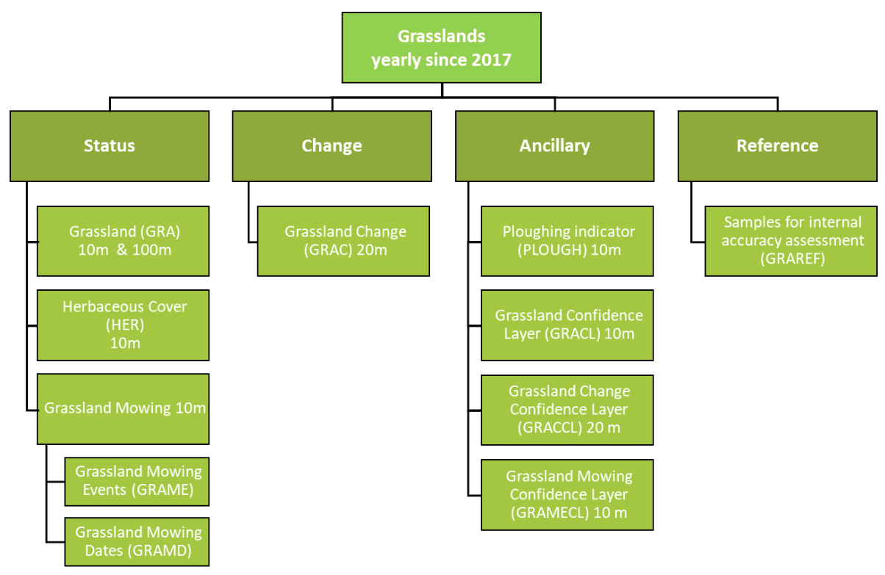
7.1 Thematic characteristics of the HRL Grasslands Product
In terms of thematic definition of the annual Grassland (GRA) status layer has been aligned with the HRL Grassland 2015 and the Historic HRL Grassland 2018 definition, ensuring consistency and comparability across the time series. Table 7-1 provides an overview of the Land Cover (LC) and Land Use (LU) features that shall be included or excluded in the HRL Grasslands. The definition encompasses natural, semi-natural and managed or cultivated grasslands (according to their origin and utilization) as well as all types of grassland (permanent or seasonal) under highly heterogeneous biogeographic conditions (wet or dry climate, fertile or poor soil). Herbaceous cover within the context of the product is understood as herbaceous vegetation with at least 30% ground cover and with at least 30% graminoid species such as Poaceae, Cyperaceae and Juncaceae. The rate of 30% ground cover density shall be understood as a benchmark implicating that grasslands with ≥30% ground cover can usually be distinguished clearly from bare ground on earth observation data with the resolution of 10 meters.
Coastal grasslands, such as grey dunes and salt meadows with at least 30 % cover of graminoids cover, are included. The definition also tolerates non-woody plants such as lichens, mosses, sedges and herbs but excludes wetlands and other peat-forming ecosystems dominated by sedges, reed beds and helophytes dominated systems, tall forbs, fern, and shrub dominated vegetation. The definition includes extensive areas of agricultural grasslands (pastures and meadows) or herbaceous fodder crops and managed recreational grasslands (e.g. lawns). Arable fields with graminoids like winter wheat, barley and rye are explicitly excluded.
Table 7-1: Elements to be included/ excluded in the Herbaceous Cover and Grassland Status Layers
| Elements included | Elements excluded |
|---|---|
| ▪ Natural, semi-natural, agricultural / managed grass-covered surfaces ▪ Grasslands with scattered trees and shrubs covering a maximum 10% ▪ Heathland with high grass cover, maximum of 10% non-grass cover ▪ Coastal grasslands, such as grey dunes and salt meadows located in intertidal flat areas with at least 30% graminoid species of vegetation cover ▪ Sparsely vegetated grasslands (≥30% vegetation cover) ▪ Grasslands in urban areas: parks, urban green spaces in residential and industrial areas ▪ Semi-arid steppes with scattered Artemisia scrub ▪ Meadows: grasslands which are not regularly grazed by domestic livestock, but rather allowed to grow unchecked in order to produce hay ▪ Grasslands in urban areas: sport fields, golf courses ▪ Grasslands on land without use ▪ Natural grasslands on military sites |
▪ Peat forming ecosystems dominated by sedges ▪ Reed beds and helophytes dominated systems ▪ Tall forbs, fern, shrub dominated vegetation ▪ Grasslands that have been observed as tilled in the reference year or the 6 years before (applicable for GRA but not for HER) ) ▪ Rice fields ▪ Vineyards, orchards, olive groves, (if more than 10% shrubs or trees) ▪ Tundra dominated by shrubs and lichens ▪ Grasslands on fresh (and older) clear-cuts in the woods ▪ Sparsely vegetated grasslands with <30% vegetation cover |
The two main yearly status layers are the Herbaceous Cover (HER) layer and the Grassland (GRA) layer that reflect the important distinction between permanent and temporary grassland.
While the criteria for the distinction of permanent and temporary grasslands vary across Europe, several countries use a persistence threshold of at least 6 years. The specification of the GRA layer follows this convention and defines permanent grassland as stable, continuously herbaceous vegetation for at least six years, with no ploughing events occurring during that period.
The newly introduced annual HER layer, on the other hand, still includes both permanent and temporary grasslands (e.g. seeded grassland and fodder crops that might have been tilled within the reference year) if it was the dominant land cover in the respective reference year.
The PLOUGH layer records detect tilling events annually for the respective reference year and the previous six years, serving as the primary input for distinguishing between temporary herbaceous cover and permanent grassland and thus allows the derivation of the GRA from the HER layer.
The Grassland Mowing (GRAM) layers provide information on timing and number of mowing events where mowing is defined as the mechanical cutting of the herbaceous cover with mowing machines or scythes. Such interventions leave typical drops in the time-series of the Normalized Difference Vegetation Index (NDVI) which can be detected automatically (Figure 7-5). The Grassland Mowing Dates (GRAMD) layers records the Day of Year (DOY) of up to four mowing events for all pixels marked as permanent and temporary grassland in reference year in the HER layer of the respective year. The Minimum Mapping Unit for the GRAMD is set to 0.25ha (see Section 7 for further details on the implementation of the sieving mechanism). The GRAME layer is providing the total count of mowing events recorded per year.
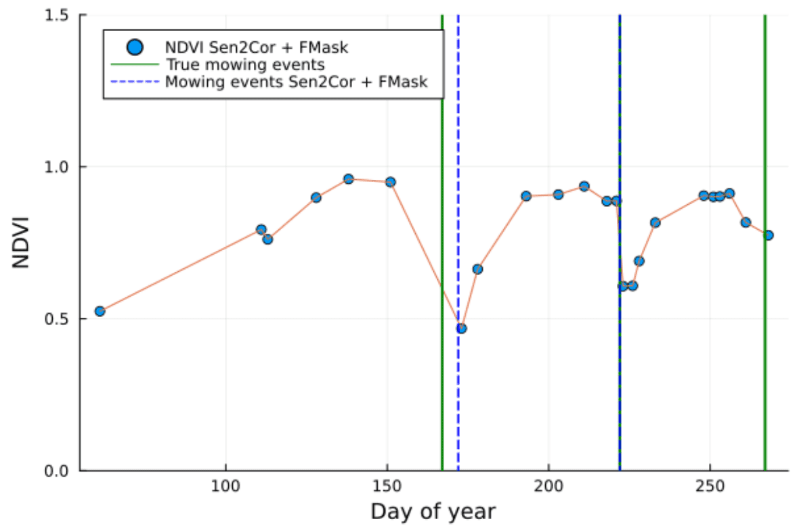
7.2 Download content, file naming convention and file format(s)
Table 7-2: Download content, file naming convention and file format(s) for HRL Grasslands layers
| Name of layer | Acronym | Abbreviation | Data format | Metadata |
|---|---|---|---|---|
| Grassland | GRA | GRA_S2017_R10m GRA_S2018_R10m GRA_S2019_R10m GRA_S2020_R10m GRA_S2021_R10m |
Tiles of Cloud-Optimized GeoTIFF aligned with the 100 km LAEA grid and with embedded colormaps, as well asseparate colour legends in the formats .qml, .sld and *.lyr | XML metadata files according to INSPIRE metadata standards and GDAL-style Permanent Auxiliary Metadata (PAM)*.aux.xml including statistics and Raster Attribute Table |
| Ploughing Indicator | PLOUGH | PLOUGH_S2017_R10m PLOUGH_S2018_R10m PLOUGH_S2019_R10m PLOUGH_S2020_R10m PLOUGH_S2021_R10m |
Tiles of Cloud-Optimized GeoTIFF aligned with the 100 km LAEA grid and with embedded colormaps, as well asseparate colour legends in the formats .qml, .sld and *.lyr | XML metadata files according to INSPIRE metadata standards and GDAL-style Permanent Auxiliary Metadata (PAM)*.aux.xml including statistics and Raster Attribute Table |
| Herbaceous Cover | HER | HER_S2017_R10m HER_S2018_R10m HER_S2019_R10m HER_S2020_R10m HER_S2021_R10m |
||
| Grassland Change | GRAC | GRAC_C2018-2021_020m | ||
| Grassland Mowing Events | GRAME | GRAME_S2017_R10m GRAME_S2018_R10m GRAME_S2019_R10m GRAME_S2020_R10m GRAME_S2021_R10m |
||
| Grassland Mowing Dates | GRAMD | GRAMD_1_S2017_R10m GRAMD_1_S2018_R10m GRAMD_1_S2019_R10m GRAMD_1_S2020_R10m GRAMD_1_S2021_R10m GRAMD_2_S2017_R10m GRAMD_2_S2018_R10m GRAMD_2_S2019_R10m GRAMD_2_S2020_R10m GRAMD_2_S2021_R10m GRAMD_3_S2017_R10m GRAMD_3_S2018_R10m GRAMD_3_S2019_R10m GRAMD_3_S2020_R10m GRAMD_3_S2021_R10m GRAMD_4_S2017_R10m GRAMD_4_S2018_R10m GRAMD_4_S2019_R10m GRAMD_4_S2020_R10m GRAMD_4_S2021_R10m |
||
| Grassland Confidence Layer | GRACL | GRACL_S2017_R10m GRACL_S2018_R10m GRACL_S2019_R10m GRACL_S2020_R10m GRACL_S2021_R10m |
||
| Grassland Change Confidence Layer | GRACCL | GRACCL_C2018-2021_R20m | ||
| GRAME Confidence Layer | GRAMECL | GRAMECL_S2017_R10m GRAMECL_S2018_R10m GRAMECL_S2019_R10m GRAMECL_S2020_R10m GRAMECL_S2021_R10m |
7.3 Projection and spatial coverage
Table 7-3: Projection and spatial coverage for HRL Grasslands layers
| Name of layer | Acronym | Spatial coverage | Coordinate reference system (WKT) |
|---|---|---|---|
| Grassland | GRA | 5.751.002 km² (covering the full EEA-38) |
PROJCS[“ETRS89-extended / LAEA Europe”, GEOGCS[“ETRS89”, DATUM[“European_Terrestrial_Reference_System_1989”, SPHEROID[“GRS 1980”,6378137,298.257222101, AUTHORITY[“EPSG”,“7019”]], AUTHORITY[“EPSG”,“6258”]], PRIMEM[“Greenwich”,0, AUTHORITY[“EPSG”,“8901”]], UNIT[“degree”,0.0174532925199433, AUTHORITY[“EPSG”,“9122”]], AUTHORITY[“EPSG”,“4258”]], PROJECTION[“Lambert_Azimuthal_Equal_Area”], PARAMETER[“latitude_of_center”,52], PARAMETER[“longitude_of_center”,10], PARAMETER[“false_easting”,4321000], PARAMETER[“false_northing”,3210000], UNIT[“metre”,1, AUTHORITY[“EPSG”,“9001”]], AXIS[“Northing”,NORTH], AXIS[“Easting”,EAST], AUTHORITY[“EPSG”,“3035”]]] Except for French DOMs where the following CRS are used: YT: EPSG 32738 RE: EPSG 32740 MQ: EPSG 32620 GP: EPSG 32620 GF: EPSG 32620 |
| Ploughing Indicator | PLOUGH | ||
| Herbaceous Cover | HER | ||
| Grassland Change | GRAC | ||
| Grassland Mowing Events | GRAME | ||
| Grassland Mowing Dates | GRAMD | ||
| Grassland Confidence Layer | GRACL | ||
| Grassland Change Confidence Layer | GRACCL | ||
| GRAME Confidence Layer | GRAMECL |
7.4 Spatial resolution
Table 7-4: Spatial resolution for HRL Grasslands layers
| Name of layer | Acronym | Pixel size | MMU |
|---|---|---|---|
| Grassland | GRA | 10 m | 0.03 ha |
| Ploughing Indicator | PLOUGH | 10 m | N/A |
| Herbaceous Cover | HER | 10 m | N/A |
| Grassland Change | GRAC | 20 m | 1.0 ha for classes 1 and 2 only; no MMU for all other classes |
| Grassland Density | GRA | 100 m | N/A |
| Grassland Mowing Events | GRAME | 10 m | 0.25 ha, smaller patches and isolated pixels can still be encountered in neighbourhoods where all patches are below the MMU |
| Grassland Mowing Dates | GRAMD | 10 m | 0.25 ha, smaller patches and isolated pixels can still be encountered in neighbourhoods where all patches are below the MMU |
| Grassland Confidence Layer | GRACL | 10 m | N/A |
| Grassland Change Confidence Layer | GRACCL | 20 m | N/A |
| GRAME Confidence Layer | GRAMECL | 10 m | N/A |
7.5 Temporal information
Table 7-5: Temporal information for HRL Grasslands layers
| Name of layer | Acronym | Reference year |
|---|---|---|
| Grassland | GRA | 2017 2018 2019 2020 2021 |
| Ploughing Indicator | PLOUGH | 2017 2018 2019 2020 2021 |
| Herbaceous Cover | HER | 2017 2018 2019 2020 2021 |
| Grassland Mowing Events | GRAME | 2017 2018 2019 2020 2021 |
| Grassland Mowing Dates | GRAMD | 2017 2018 2019 2020 2021 |
| Grassland Confidence Layer | GRACL | 2017 2018 2019 2020 2021 |
| GRAME Confidence Layer | GRAMECL | 2017 2018 2019 2020 2021 |
| Grassland Change | GRAC | 2018 vs. 2021 |
| Grassland Change Confidence Layer | GRACCL | 2018 vs. 2021 |
7.6 Product characteristics and class codes
Table 7-6: Characteristics of HRL Grasslands layers
| Name of layer | Acronym | Classified feature | Class coding |
|---|---|---|---|
| Grassland | GRA | Grassland / Non-grassland | 0: all non-grassland areas 1: grassland 255: outside area |
| Ploughing Indicator | PLOUGH | The ploughing indicator estimates the temporal extent since the last ploughing activity observed on a grassland patch. | 0: Indication of ploughing in current year 1-6: Number of years since last indication of ploughing. 100: Change in herbaceous cover 253: no ploughing information 255: outside area |
| Herbaceous Cover | HER | Permanent and temporary grassland and non-grassland in the reference year within each pixel. | 0: non-grassland in reference year 1: temporary grassland in reference year 255: outside area |
| Grassland Change | GRAC | Grassland change 2018-2021 mask containing grassland loss, grassland gain and unchanged areas. | 0: unchanged non-grassland in both years 1: grassland gain 2: grassland loss 10: unchanged grassland in both years 255: outside area |
| Grassland Mowing Events | GRAME | The Grassland mowing events layer will flag and map the number of mowing events on temporary or permanent grassland per year. | 0: no mowing detected 1-4: Number of mowing events detected 253: all non-herbaceous areas 255: outside area |
| Grassland Mowing Dates | GRAMD | The Grassland mowing dates layerwill flag and map the start date (DOY) of each of the four detected mowing events on temporary or permanent grassland per year.Each reference year is therefore split into four separate rasters, providing the DOY for each mowing event consecutively. | 0: no mowing detected 1-366: Start (DOY) of each mowing event 65533: all non-herbaceous areas 65535: outside area |
| Grassland Confidence Layer | GRACL | Layer that measures the reliability of a pixel to be classified as grassland. For each grassland pixel, the prediction interval of the respective grassland coverage at 95% confidence. | 0-100: Classification confidence 253: All non-grassland areas 255: outside area |
| Grassland Change Confidence Layer | GRACCL | Layer that measures the reliability of a pixel to be detected as grassland mowing. For each mowing pixel. | 0-100: change confidence 253: All non-change areas 255: outside area |
| GRAME Confidence Layer | GRAMECL | Layer that measures the reliability of a pixel to be detected as grassland mowing. For each mowing pixel. | 0-100: Mowing detection confidence 253: All non-mowing areas 255: outside area |
8 Production quality assessment
The aim of this chapter is to inform about the procedures for internal validation and accuracy assessment for the status and change layer with full EEA38 coverage. While the different layers have their own quality requirements, all have in common an assessment of the thematic quality which relies on comparing mapped information within the layers with reference data at selected locations.
This procedure contains 3 steps that will be described in the following sections:
Sampling design
Response design
Statistical Analysis
The internal validation of the different HRL Grasslands layers follows scientifically accepted and operationally proven validation design, applied in previous productions of various HRL’s of reference years 2012, 2015 and 2018. According to the product specifications, results will be presented in the form of Overall Accuracies (OA), Producer’s and User’s Accuracies.
8.1 Layers to be verified
While the full portfolio on HRL Grasslands includes numerous layers and reference years, only a subset of them is concerned by the internal verification exercise. The focus of the assessment has been set on the primary layer being the Grassland (GRA) status layer and the Grassland Change (GRAC) layer. Furthermore, to keep the effort for the verification manageable the reference years 2018 and 2021 have been selected to align with the availability of important reference datasets such as LUCAS 2018 [2] the VHR IMAGE coverages of 2018 and 2021 imagery and readily harmonised GSAA datasets. An overview of the verified layers and their target accuracies is given in Table 8-1.
Table 8-1: Layers to be verified and target accuracies
| Layer | Target accuracy |
|---|---|
| GRA 10m 2018 | 85% overall accuracy |
| GRA 10m 2021 | 85% overall accuracy |
| GRAC 20m 1821 | 80% overall accuracy |
8.2 Sampling Design
The sampling approach is dedicated to assessing the accuracies of the HRL Grasslands layers at pan-European level and corresponds to a non-stratified, systematic and random sampling approach based on the 2 km by 2 km LUCAS grid. For the assessment of status products, 10 000 samples are randomly selected over the extended LUCAS grid (Figure 8-1). It is likely that this initial drawing will not overlap many Grassland changes between 2018 and 2021 due to the “rarity” of changes. The same is true for the HRL Tree Cover & Forest changes which have been validated with the same point set. Therefore, 4 000 additional samples are randomly drawn specifically in the changes’ strata of Tree Cover & Forests and Grasslands products (2 000 in the tree cover change strata, 2 000 in the grasslands change strata), for a total of 14 000 points samples (Primary Sampling Units) across EEA38.
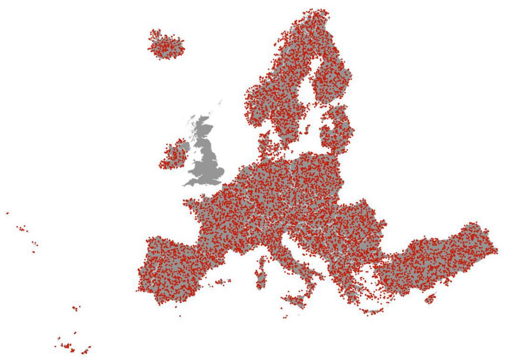
8.3 Response Design
The response design is the protocol used for retrieval of the validation/reference information for all sample units. Two types of datasets are used to perform the interpretation of samples units: guiding data and reference data.
Guiding data are those used for production of HRL Grasslands layers and consist mainly of timeseries of Sentinel-2 data.
Reference data are complementary and independent data that can provide more spatial details and landscape context:
VHR_IMAGE_20185 and VHR_IMAGE_20216: very high resolution optical earth observation imagery, covering EEA38 for the reference years 2018 and 2021 (+-1 year). Note that at time of this exercise, the VHR_IMAGE_2021 coverage is not 100% complete. These datasets comprise earth observation imagery between 2 and 4m spatial resolution.
Other external datasets:
Bing maps image/ cartography layer
Open Street Map data
Google Earth Image / cartography data
LUCAS data for the year 2018 (where available)
GSAA data for the year 2018 and 2021 (where available)
The interpretation workflow consists of thematic plausibility analysis of a sample units. This means that the class assigned by the layer is known by the interpreter during the interpretation. Depending on the layer, the interpretation workflow can differ in ways described below.
Each point sample (Primary Sampling Unit) is interpreted for each layer using the reference and guiding data. The use of Sentinel-2 time series allows to assess the “permanent” characteristic of the herbaceous coverage over the previous years. For the Grassland (GRA) status layer, the interpretation is focused on the reference pixel in which the point sample is allocated considering also the direct neighbourhood to account for the MMU of 0.03 ha. Similarly, the interpretation of a grassland change considers the wider spatial context (typically parcel level) to consider the MMU of 1 ha when evaluating the Grassland Change (GRAC) layer. No SSU is used for the interpretation of the samples with respect to grasslands.
8.4 Statistical Analysis
For the HRL Grasslands product the thematic accuracy levels are defined in terms of Overall Accuracy, Producer’s Accuracy and User’s Accuracy are computed as well and provided for information.
The Overall Accuracy (OA) or Recognition Rate (Rr) is measured by the sum of the diagonal of the Confusion Matrix divided by the total number of controlled points: \(OA \; \text{or} \; R_r = \frac{\sum_{\alpha=i}^{m} (\alpha \alpha)}{T}\). The Overall Accuracy assesses the overall agreement between classified and reference data sets. However, for single class themes, it does not necessarily provide a realistic assessment of the quality of the map produced because there can be substantial unbalance between omission and commission errors.
The row and column totals and the diagonal of the Matrix are used to assess two further types of accuracy, the User’s and Producer’s Accuracy:
Producer’s Accuracy (PA) for a given class = αα/Cα, representing an (inversely proportional) measure of Omission Error. For instance, an observation has been identified as tree-covered in the validation dataset but was actually classified as another class: it has been omitted from the target class.
User’s Accuracy (UA) for a given class 𝛼𝛼/𝑅𝛼, representing an (inversely proportional) measure of the Commission Error (or contamination risk), i.e. errors due to the wrong allocation of an observation (i.e. mapped landcover) to a landcover class. For instance, an observation is classified as broadleaved tree cover but identified as belonging to another class during the validation process: this observation has contaminated another class.
As mentioned in Section 8.2, unequal sampling intensity resulting from the stratified systematic sampling approach for change layers will be accounted for by applying a weight factor ((p)) to each Sample Unit, based on the ratio between the number of samples and the size of the stratum considered:
\[ \hat{p}_{ij} = \left(\frac{1}{N}\right) \sum_{x \in (i,j)} \frac{1}{\pi^{*}_{uh}} \]
Where \(i\) and \(j\) are the columns and rows in the matrix, \(N\) is the total number of possible units (population) and \(\pi\) is the sampling intensity for a given stratum.
This is because the samples from the smaller strata (i.e. change layers) show a higher sampling intensity than those from the larger strata (i.e. status layers). Therefore, a correction for the sampling intensity will be applied to the error matrices produced following the procedure described by [3] and applied by [4], leading to a weighting factor inversely proportional to the inclusion probability of samples from a given stratum. Not applying this correction could result in underestimating or overestimating map accuracies. On the following sections, confusion matrices will be presented in both weighted and unweighted version. While the weighted versions provide statistically corrected results for accuracy figures, the application of weights make the matrix cells number difficult to read: the cells contain the number of validation samples for each category with their respective weights applied. The unweighted matrices, on the other hand, present accuracy figures that are less accurate (as the over-representation of change samples is not corrected), but the matrix cells contain number of samples for each category without their weights applied, making it far easier to understand how many validation samples falls into each category.
8.5 Verification Results
The HRL Grasslands status layers for the reference years 2018 and 2021 should reach an overall accuracy of 85%. Figures derived from this verification exercise show that this target is largely exceeded, where overall accuracies are always above 95%, reflecting the high level of quality of the Grassland (GRA) status layer, both at EU27 (Table 8-2) and EEA38 (Table 8-3) level. The same applies for the Grassland Change (GRAC) layer which exceed the Overall Accuracy of 80% for both the EU27 and the EEA38 (Table 8-4).
Table 8-2: GRA validation results at EU27 Level
GRA18 - EU27 (Weighted)
| Product | Ref. 0 | Ref. 1 | Total | User Acc. | CI95% |
|---|---|---|---|---|---|
| 0 | 5425.442 | 60.025 | 5485.467 | 98.9% | 0.21% |
| 1 | 39.049 | 1185.702 | 1224.751 | 96.8% | 0.35% |
| Total | 5464.490 | 1245.728 | 6710.218 | ||
| Prod. Acc. | 99.3% | 95.1% | |||
| CI95% | 0.17% | 0.36% |
Overall Accuracy: 98.52%
GRA18 - EU27 (Unweighted)
| Product | Ref. 0 | Ref. 1 | Total | User Acc. | CI95% |
|---|---|---|---|---|---|
| 0 | 7235 | 67 | 7302 | 99.1% | 0.19% |
| 1 | 52 | 2350 | 2402 | 97.8% | 0.29% |
| Total | 7287 | 2417 | 9704 | ||
| Prod. Acc. | 99.3% | 97.2% | |||
| CI95% | 0.17% | 0.27% |
Overall Accuracy: 98.77%
GRA21 - EU27 (Weighted)
| Product | Ref. 0 | Ref. 1 | Total | User Acc. | CI95% |
|---|---|---|---|---|---|
| 0 | 5457.654 | 61.040 | 5518.694 | 98.9% | 0.21% |
| 1 | 34.036 | 1157.488 | 1191.525 | 97.1% | 0.33% |
| Total | 5491.690 | 1218.528 | 6710.218 | ||
| Prod. Acc. | 99.4% | 95.0% | |||
| CI95% | 0.16% | 0.36% |
Overall Accuracy: 98.58%
GRA21 - EU27 (Unweighted)
| Product | Ref. 0 | Ref. 1 | Total | User Acc. | CI95% |
|---|---|---|---|---|---|
| 0 | 8215 | 70 | 8285 | 99.2% | 0.18% |
| 1 | 46 | 1373 | 1419 | 96.8% | 0.35% |
| Total | 8261 | 1443 | 9704 | ||
| Prod. Acc. | 99.4% | 95.1% | |||
| CI95% | 0.15% | 0.36% |
Overall Accuracy: 98.80%
Table 8-3: GRA validation results at EEA38 Level
GRA18 - EU38 (Weighted)
| Product | Ref. 0 | Ref. 1 | Total | User Acc. | CI95% |
|---|---|---|---|---|---|
| 0 | 7840.101 | 105.291 | 7945.392 | 98.7% | 0.19% |
| 1 | 170.154 | 1654.325 | 1824.479 | 90.7% | 0.49% |
| Total | 8010.254 | 1759.616 | 9769.870 | ||
| Prod. Acc. | 97.9% | 94.0% | |||
| CI95% | 0.24% | 0.40% |
Overall Accuracy: 97.18%
GRA18 - EU38 (Unweighted)
| Product | Ref. 0 | Ref. 1 | Total | User Acc. | CI95% |
|---|---|---|---|---|---|
| 0 | 10228 | 219 | 10447 | 97.9% | 0.24% |
| 1 | 225 | 3070 | 3295 | 93.2% | 0.42% |
| Total | 10453 | 3289 | 13742 | ||
| Prod. Acc. | 97.8% | 93.3% | |||
| CI95% | 0.24% | 0.42% |
Overall Accuracy: 96.77%
GRA21 - EU38 (Weighted)
| Product | Ref. 0 | Ref. 1 | Total | User Acc. | CI95% |
|---|---|---|---|---|---|
| 0 | 7873.779 | 107.153 | 7980.932 | 98.7% | 0.19% |
| 1 | 165.138 | 1623.801 | 1788.938 | 90.8% | 0.48% |
| Total | 8038.917 | 1730.953 | 9769.870 | ||
| Prod. Acc. | 97.9% | 93.8% | |||
| CI95% | 0.24% | 0.40% |
Overall Accuracy: 97.21%
GRA21 - EU38 (Unweighted)
| Product | Ref. 0 | Ref. 1 | Total | User Acc. | CI95% |
|---|---|---|---|---|---|
| 0 | 11398 | 160 | 11558 | 98.6% | 0.20% |
| 1 | 218 | 1966 | 2184 | 90.0% | 0.50% |
| Total | 11616 | 2126 | 13742 | ||
| Prod. Acc. | 98.1% | 92.5% | |||
| CI95% | 0.23% | 0.44% |
Overall Accuracy: 97.25%
Table 8-4: GRAC validation results for EU27 and EEA38
GRAC1821 - EU27 (Weighted)
| Product | Stable | New GRA | Loss of GRA | Total | User Acc. | CI95% |
|---|---|---|---|---|---|---|
| Stable | 6647.69 | 13.03 | 30.18 | 6690.90 | 99.4% | 0.17% |
| New GRA | 0.03 | 0.42 | 0.45 | 92.8% | 1.61% | |
| Loss of GRA | 8.39 | 10.47 | 18.87 | 55.5% | 3.08% | |
| Total | 6656.12 | 13.45 | 40.65 | 6710.22 | ||
| Prod. Acc. | 99.9% | 3.1% | 25.8% | |||
| CI95% | 0.07% | 1.08% | 2.71% |
Overall Accuracy: 99.23%
GRAC1821 - EU27 (Unweighted)
| Product | Stable | New GRA | Loss of GRA | Total | User Acc. | CI95% |
|---|---|---|---|---|---|---|
| Stable | 8111 | 17 | 57 | 8185 | 99.1% | 0.20% |
| New GRA | 15 | 192 | 207 | 92.8% | 1.61% | |
| Loss of GRA | 186 | 1126 | 1312 | 85.8% | 2.16% | |
| Total | 8312 | 209 | 1183 | 9704 | ||
| Prod. Acc. | 97.6% | 91.9% | 95.2% | |||
| CI95% | 0.32% | 1.69% | 1.33% |
Overall Accuracy: 97.17%
GRAC1821 - EU38 (Weighted)
| Product | Stable | New GRA | Loss of GRA | Total | User Acc. | CI95% |
|---|---|---|---|---|---|---|
| Stable | 9696.12 | 16.03 | 33.18 | 9745.32 | 99.5% | 0.13% |
| New GRA | 2.36 | 0.50 | 0.00 | 2.86 | 17.5% | 1.67% |
| Loss of GRA | 9.57 | 12.12 | 21.69 | 55.9% | 2.18% | |
| Total | 9708.04 | 16.53 | 45.30 | 9769.87 | ||
| Prod. Acc. | 99.9% | 3.0% | 26.8% | |||
| CI95% | 0.06% | 0.75% | 1.94% |
Overall Accuracy: 99.37%
GRAC1821 - EU38 (Unweighted)
| Product | Stable | New GRA | Loss of GRA | Total | User Acc. | CI95% |
|---|---|---|---|---|---|---|
| Stable | 11642 | 21 | 60 | 11723 | 99.3% | 0.15% |
| New GRA | 148 | 225 | 1 | 374 | 60.2% | 2.15% |
| Loss of GRA | 256 | 1389 | 1645 | 84.4% | 1.59% | |
| Total | 12046 | 246 | 1450 | 13742 | ||
| Prod. Acc. | 96.6% | 91.5% | 95.8% | |||
| CI95% | 0.33% | 1.22% | 0.88% |
Overall Accuracy: 96.46%
9 Terms of use and product technical support
9.1 Terms of use
The Terms of Use for the product(s) described in this document acknowledge the following:
Free, full and open access to the products and services of the Copernicus Land Monitoring Service is made on the conditions that:
When distributing or communicating Copernicus Land Monitoring Service products and services (data, software scripts, web services, user and methodological documentation and similar) to the public, users shall inform the public of the source of these products and services and shall acknowledge that the Copernicus Land Monitoring Service products and services were produced “with funding by the European Union”.
Where the Copernicus Land Monitoring Service products and services have been adapted or modified by the user, the user shall clearly state this.
Users shall make sure not to convey the impression to the public that the user’s activities are officially endorsed by the European Union.
The user has all intellectual property rights to the products he/she has created based on the Copernicus Land Monitoring Service products and services.
Consult Data policy — Copernicus Land Monitoring Service for further details.
9.2 Citation
When planning a publication (scientific, commercial, etc.), it shall explicitly mention:
“This publication has been prepared using European Union’s Copernicus Land Monitoring Service information; <insert all relevant DOI links here, if applicable>”
When developing a product or service using the products or services of the Copernicus Land Monitoring Service, it shall explicitly mention:
“Generated using European Union’s Copernicus Land Monitoring Service information; <insert all relevant DOI links here, if applicable>”
When redistributing a part of the Copernicus Land Monitoring Service (product, dataset, documentation, picture, web service, etc.), it shall explicitly mention:
“European Union’s Copernicus Land Monitoring Service information; <insert all relevant DOI links here, if applicable>”
Consult Data policy — Copernicus Land Monitoring Service for further details.
9.3 Product technical support
Product technical support is provided by the product custodian through Copernicus Land Monitoring Service – Service desk. Product technical support does not include software specific user support or general GIS or remote sensing support.
More information on the products can be found on the Copernicus Land Monitoring Service website (https://land.copernicus.eu/).
10 List of Abbreviations & Acronyms
| Abbreviation | Name |
|---|---|
| ATBD | Algorithm Theoretical Basis Document |
| BVL | Base Vegetation Layer |
| CAP | Common Agricultural Policy |
| CL | Confidence Layer |
| CLC | CORINE Land Cover |
| CLMS | Copernicus Land Monitoring Service |
| CLS | Collecte Localisation Satellites |
| COG | Cloud-Optimized GeoTIFFs |
| CORINE | Coordination of information on the environment |
| DOY | Day Of Year |
| EAGLE | EIONET Action Group on Land monitoring in Europe |
| ECoLaSS | Evolution of Copernicus Land Services based on Sentinel Data |
| EEA | European Environment Agency |
| EEA38 | The 32 member and 6 cooperating countries of the EEA |
| EIONET | European Environment Information and Observation Network |
| EO | Earth Observation |
| EU | European Union |
| EU27 | The 27 member states of the EU |
| GIS | Geographic Information System |
| GRA | Grassland Status Layer |
| GRAC | Grassland Change Layer |
| GRACCL | Grassland Change Confidence Layer |
| GRACL | Grassland Confidence Layer |
| GRAM | Grassland Mowing |
| GRAMD | Grassland Mowing Dates |
| GRAME | Grassland Mowing Events |
| GRAMECL | Grassland Mowing Events Confidence Layer |
| GSAA | GeoSpatial Aid Application |
| H2020 | Horizon2020 |
| HER | Herbaceous Cover Layer |
| HR | High Resolution |
| HRL / HRLs | High Resolution Layer / High Resolution Layers |
| HRL VLCC | High Resolution Layer – Vegetated Land Cover Characteristics |
| ID | Identification Number |
| IPCC | Intergovernmental Panel on Climate Change |
| JRC | Joint Research Centre |
| LAEA | Lambert Azimuthal Equal Area projection |
| LC | Land Cover |
| LU | Land Use |
| LUCAS | Land Use / Cover Area frame Survey |
| LULUCF | Land Use, Land Use Change and Forestry |
| MMU | Minimum Mapping Unit |
| NDVI | Normalized Difference Vegetation Index |
| NVLCC | Non-Vegetated Land Cover Characteristics |
| OA | Overall Accuracy |
| PA | Producer Accuracy |
| PAM | Permanent Auxiliary metadata |
| PLOUGH | Ploughing Indicator |
| Rr | Recognition Rate |
| SSU | Secondary Samples Units |
| UA | User’s Accuracy |
| UK | United Kingdom |
| UTM | Universal Transverse Mercator |
| VHR | Very High Resolution |
| VITO | Vlaamse Instelling voor Technologisch Onderzoek |
| XML | Extensible Markup Language |
11 References
[1] T. Duan et al., NGBoost: Natural Gradient Boosting for Probabilistic Prediction (2020), ICML 2020
[2] Eurostat. (2018). LUCAS Survey 2018. [Data set]. https://ec.europa.eu/eurostat/web/lucas/data/primary-data.
[3] Selkowitz, D. J., & Stehman, S. V. (2011). Thematic accuracy of the National Land Cover Database (NLCD) 2001 land cover for Alaska. Remote Sensing of Environment, 115(6), 1401-1407.
[4] Olofsson, P., Foody, G. M., Stehman, S. V., & Woodcock, C. E. (2013). Making better use of accuracy data in land change studies: Estimating accuracy and area and quantifying uncertainty using stratified estimation. Remote Sensing of Environment, 129, 122-131.
[5] ECoLaSS (2019). Deliverable D3.2 - Service Evolution Requirements Report Vol. 2 https://www.ecolass.eu/_files/ugd/c90769_5a431f06039141a6b4db4d6b4596d272.pdf (accessed 28 October 2024)
[6] Nextspace (2018 ). Work performed by the Nextspace consortium – Observation Requirements (February 2018); https://www.copernicus.eu/en/documentation/technicaldocuments/technical-documents (accessed 28 October 2024)
[7] CLMS Vegetated HRL ATBD (2024). HRL Algorithm Technical Basis Document
[8] CLMS HRL Grassland 2015 (2017). HRL Grassland 2015 Product Specifications
12 Annex I – Colour tables for HRL Grasslands
Table 0-1: Colour palette and attributes of GRA layer
13 Class Code0 |
14 Class Nameall non-grass areas |
15 Red240 |
16 Green240 |
17 Blue240 |
=============================================================================+ |
| 1 | grassland | 163 | 199 | 56 | |
| 255 | outside area | 0 | 0 | 0 |
Table 0-2: Colour palette and attributes of HER layer
18 Class Code0 |
19 Class Namenon-grassland in reference year |
20 Red240 |
21 Green240 |
22 Blue240 |
==========================================================================================================+ |
| 1 | permanent and temporary grassland in reference year | 116 | 151 | 11 | |
| 255 | outside area | 0 | 0 | 0 |
Table 0-3: Colour palette and attributes of PLOUGH layer
23 Class Code0 |
24 Class NameIndication of ploughing in current year |
25 Red66 |
26 Green0 |
27 Blue0 |
==========================================================================================================+ |
| 1 | 1 year since last indication of ploughing | 128 | 0 | 0 | |
| 2 | 2 years since last indication of ploughing | 199 | 60 | 18 | |
| 3 | 3 years since last indication of ploughing | 230 | 107 | 37 | |
| 4 | 4 years since last indication of ploughing | 247 | 153 | 59 | |
| 5 | 5 years since last indication of ploughing | 252 | 201 | 91 | |
| 6 | 6 years since last indication of ploughing | 255 | 236 | 140 | |
| 100 | Change of herbaceous cover | 229 | 251 | 17 | |
| 253 | no ploughing information | 240 | 240 | 240 | |
| 255 | outside area | 0 | 0 | 0 |
Table 0-4: Colour palette and attributes of GRAC layer
28 Class Code0 |
29 Class Nameunchanged non-grassland in both years |
30 Red240 |
31 Green240 |
32 Blue240 |
=====================================================================================================+ |
| 1 | grassland gain | 0 | 141 | 246 | |
| 2 | grassland loss | 255 | 0 | 0 | |
| 10 | unchanged grassland in both years | 163 | 199 | 56 | |
| 254 | unclassifiable in any of parent status layers | 153 | 153 | 153 | |
| 255 | outside area | 0 | 0 | 0 |
Table 0-5: Colour palette and attributes of GRACL layer
33 Class Code0 |
34 Class Name0% grassland confidence |
35 Red194 |
36 Green82 |
37 Blue60 |
================================================================================+ |
|
| 1-49 | 1-49% grassland confidence | colour shades in between | colour shades in between | colour shades in between | colour shades in between | |
| 50 | 50% grassland confidence | 123 | 237 | 0 | ||
| 51-99 | 51-99% grassland confidence | colour shades in between | colour shades in between | colour shades in between | colour shades in between | |
| 100 | 100% grassland confidence | 12 | 47 | 122 | ||
| 253 | all non-grassland areas | 240 | 240 | 240 | ||
| 255 | outside area | 0 | 0 | 0 | ||
Table 0-6: Colour palette and attributes of GRACCL layer
38 Class Code0 |
39 Class Name0% grassland change confidence |
40 Red194 |
41 Green82 |
42 Blue60 |
================================================================================+ |
|
| 1-49 | 1-49% grassland change confidence | colour shades in between | colour shades in between | colour shades in between | colour shades in between | |
| 50 | 50% grassland change confidence | 123 | 237 | 0 | ||
| 51-99 | 51-99% grassland change confidence | colour shades in between | colour shades in between | colour shades in between | colour shades in between | |
| 100 | 100% grassland change confidence | 12 | 47 | 122 | ||
| 253 | all non-grassland change areas | 240 | 240 | 240 | ||
| 255 | outside area | 0 | 0 | 0 | ||
Table 0-7: Colour palette and attributes of GRAMECL layer
43 Class Code0 |
44 Class Name0% grassland mowing confidence |
45 Red194 |
46 Green82 |
47 Blue60 |
===============================================================================+ |
|
| 1-49 | 1-49% grassland mowing confidence | colour shades in between | colour shades in between | colour shades in between | colour shades in between | |
| 50 | 50% grassland mowing confidence | 123 | 237 | 0 | ||
| 51-99 | 51-99% grassland mowing confidence | colour shades in between | colour shades in between | colour shades in between | colour shades in between | |
| 100 | 100% grassland mowing confidence | 12 | 47 | 122 | ||
| 253 | All non-mowing areas | 240 | 240 | 240 | ||
| 255 | outside area | 0 | 0 | 0 | ||
Table 0-8: Colour palette and attributes of GRAME layer
48 Class Code0 |
49 Class Nameall non-mowing areas |
50 Red240 |
51 Green240 |
52 Blue240 |
===========================================================================================================================+ |
| 1 | all grassland areas that have been mowed once | 237 | 248 | 251 | |
| 2 | all grassland areas that have been mowed twice | 178 | 226 | 226 | |
| 3 | all grassland areas that have been mowed three times | 102 | 194 | 164 | |
| 4+ | all grassland areas that have been mowed four times or more times | 35 | 139 | 69 | |
| 253 | all non-herbaceous areas | 240 | 240 | 240 | 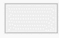 |
| 255 | outside area | 0 | 0 | 0 |
Table 0-9: Colour palette and attributes of GRAMD layer
53 Class Code0 |
54 Class Nameno mowing detected |
55 Red240 |
56 Green240 |
57 Blue240 |
=================================================================================+ |
|
| 1 | 01.01.YYYY mowing date | 255 | 237 | 195 | ||
| 2-181 | 02.01.YYYY - 30.06.YYYY mowing date | colour shades in between | colour shades in between | colour shades in between | colour shades in between | |
| 182 | 01.07.YYYY mowing date | 175 | 74 | 51 | ||
| 183-364 | 02.07.YYYY - 30.12.YYYY mowing date | colour shades in between | colour shades in between | colour shades in between | colour shades in between | |
| 366 | 31.12.YYYY mowing date | 113 | 12 | 2 | ||
| 65533 | all non-herbaceous areas | 240 | 240 | 240 | ||
| 65535 | outside area | 0 | 0 | 0 | ||
58 Document History:
Record of changes made to the document over time after the initial published version, including version numbers, dates of revisions, and a summary of modifications. This table must be only included in the initial PUM published version and without the personal information (“Created by:” filed must be removed).
| Version | Date | Short description of changes |
|---|---|---|
| 1.0 | 2025-03-28 | Initial published issue |
Footnotes
https://land.copernicus.eu/en/eagle?tab=technical_implementation↩︎
https://land.copernicus.eu/en/technical-library/product-user-manual-clc-backbone-2021↩︎
https://www.evo-land.eu/method/biomass-mapping/↩︎
https://www.evo-land.eu/method/biomass-mapping/↩︎
https://dataspace.copernicus.eu/explore-data/data-collections/copernicus-contributing-missions/collections-description/VHR-IMAGE-2018↩︎
https://dataspace.copernicus.eu/explore-data/data-collections/copernicus-contributing-missions/collections-description/VHR-IMAGE-2021↩︎